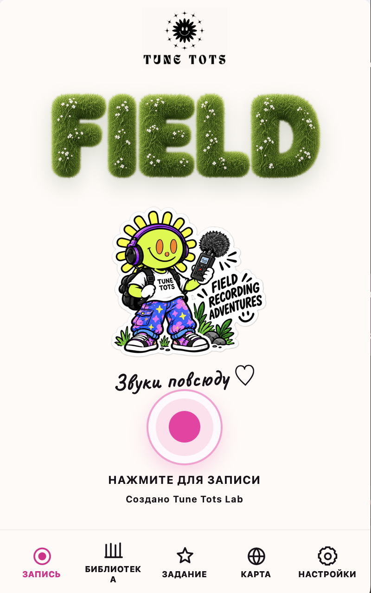
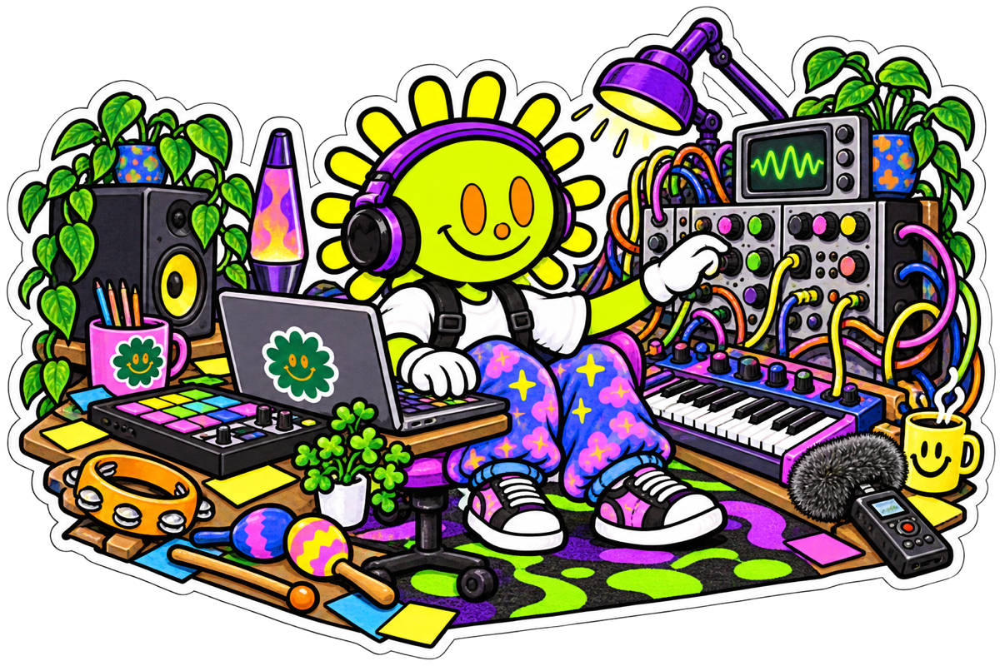
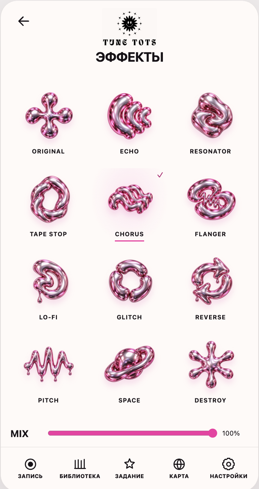
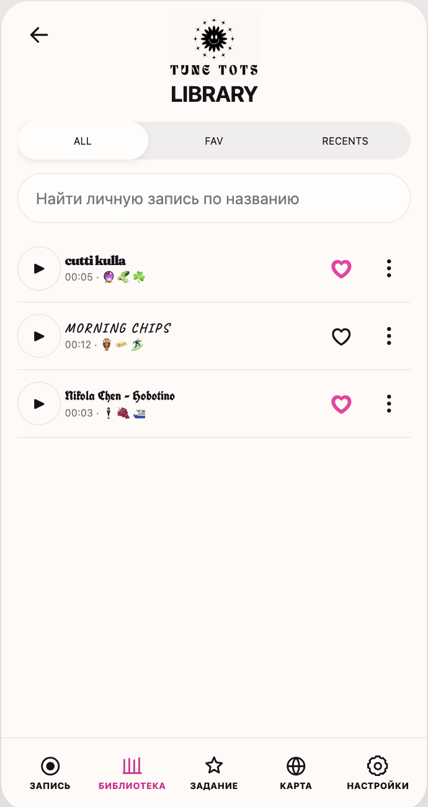
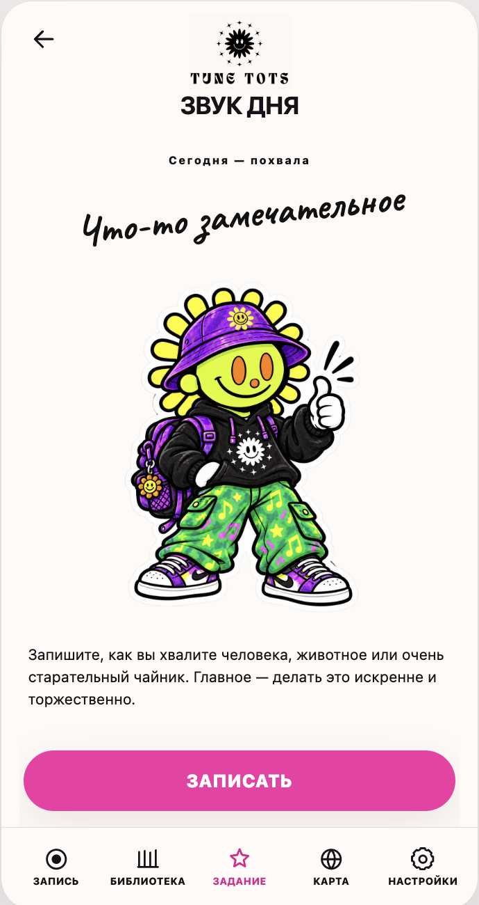
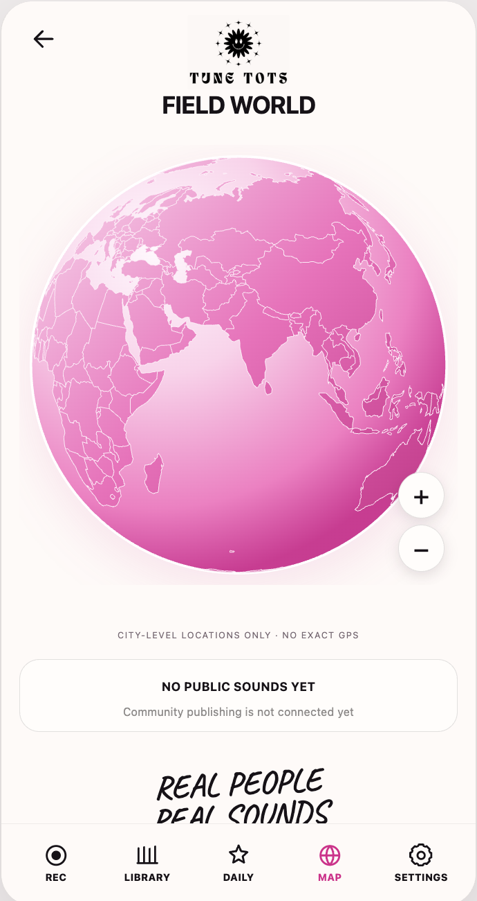

01 / RECORDЗаписывай то,
Записывай то,
что обычно проходит мимо.
Большая кнопка записи, живой таймер и сигнал с микрофона. До 60 секунд настоящего звука вокруг тебя.

Цифровые инструменты / звуковые эксперименты
Приложения, музыкальные инструменты и цифровые эксперименты, которые превращают окружающий мир в музыку.
Смотреть FIELD ↓
придумываем · крутим · слушаем
01 / FIELD · Полевые звуковые приключения
FIELD — полевой рекордер и звуковой дневник, который родился внутри нашей музыкальной лаборатории.
В первую очередь мы создаём FIELD для учеников Tune Tots Lab: чтобы прямо на уроке записывать полевые звуки, быстро обрабатывать их и использовать в музыке.
Записью можно поделиться с группой, друзьями и преподавателем — так работа над треком идёт быстрее. А теперь мы хотим открыть FIELD для всех, кому интересно слушать мир по-новому.
слышишь? записывай ↘
FIELD на телефоне
Это реальные экраны FIELD. Запиши звук, преобрази его эффектами, сохрани в библиотеку, выполни ежедневную миссию и отправь находку на карту мира.
Большая кнопка записи, живой таймер и сигнал с микрофона. До 60 секунд настоящего звука вокруг тебя.


Echo, Resonator, Chorus, Flanger, Glitch, Reverse и другие эффекты можно смешивать с оригинальной записью.
Ищи записи по названию, отмечай любимые и возвращайся к недавним звукам прямо на уроке.


Каждый день FIELD предлагает короткую миссию: записать похвалу, воду, транспорт или что-то неожиданное.
Публичная карта собирает звуковые открытки из разных городов. Точное местоположение не показывается — только город.

Париж Вена Ереван Бангкок ТокиоКак FIELD помогает работать со звуком
FIELD не усложняет работу со звуком: поймай интересный фрагмент, оставь лучшее, добавь эффект и отправь запись в свою библиотеку или группе.
До 60 секунд.
Оставь главное.
Добавь эффект.
Вернись или поделись.
Echo добавляет пространство, Resonator превращает шум в ноту, Reverse разворачивает знакомый звук задом наперёд, а Glitch аккуратно всё ломает. Эффект слышно сразу: можно крутить, сравнивать и сохранять удачный вариант, не выходя из FIELD.
Готовы слушать?
Остановись, нажми Record и запиши этот мир. FIELD работает в браузере и в Telegram.